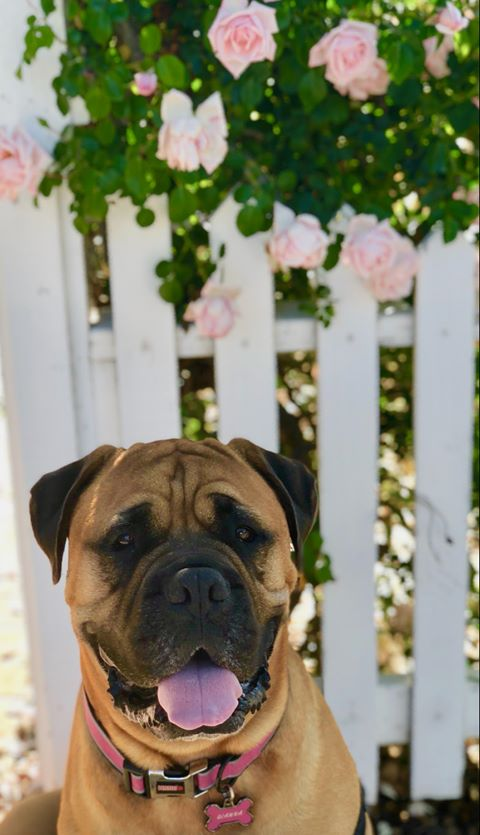

Welcome to Gianna's Dog House

Gianna the Bullmastiff
Gianna's Dog House specializes in senior care sitting for dogs. We know that seniors need a little more personal attention and affection.
At Gianna's Dog House you can be assured your pet will get the best personalized attention in a stress free environment and will never be alone.
Senior care for dogs

Diego
Donec gravida est vel ligula. Phasellus fermentum dui congue nunc. Vivamus non ipsum. Nulla a eros. Pellentesque tellus. Sed ut ipsum vestibulum lorem dapibus lobortis. In ac augue ac purus dignissim condimentum. Nulla mi elit
| Age | Weight | Sex | |
|---|---|---|---|
| Gianna | 7 years | 110 lbs | Female |
| Sparky | 2 years | 45 lbs | Male |
| Jojo | 9 year | 32 lbs | Female |
| Diego | 8 years | 75 lbs | Male |
| Copyright © 2016 | |||